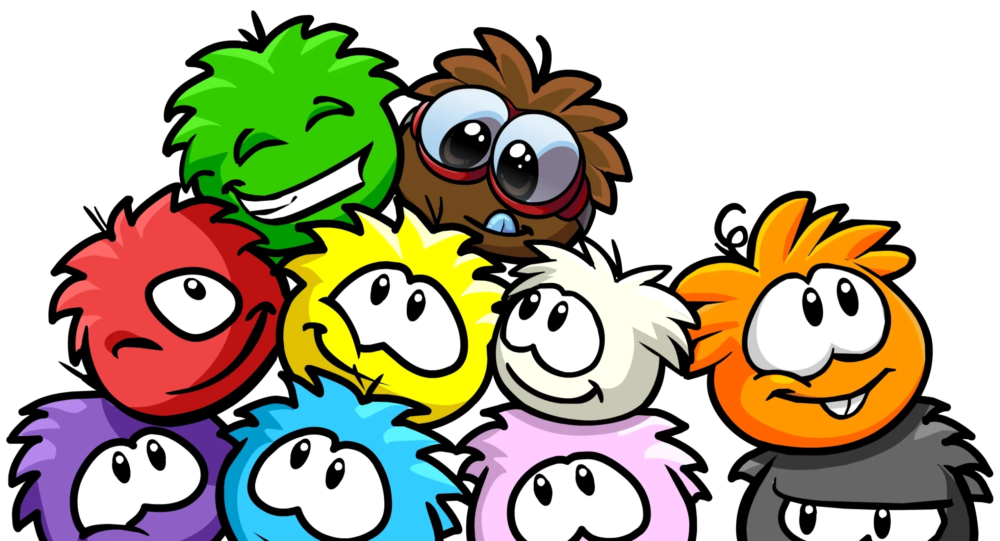
Um agradecimento a todas as pessoas que estiveram presentes na minha vida durante minha jornada
 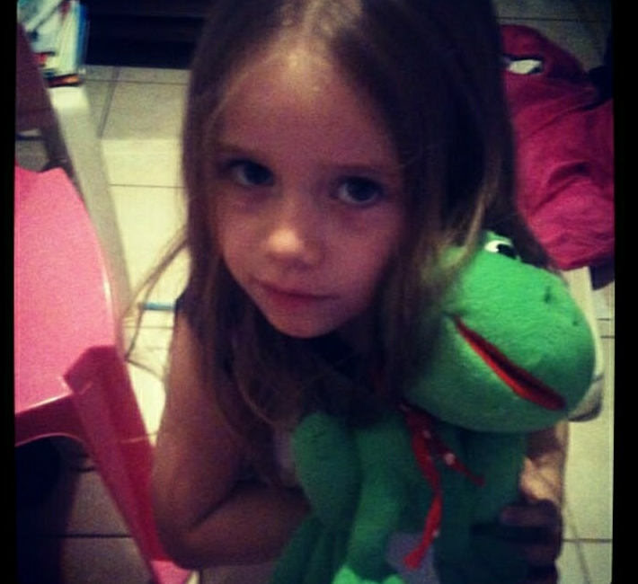
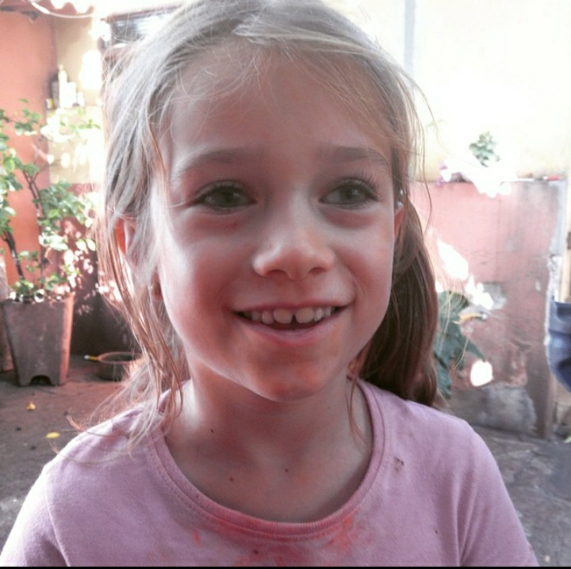
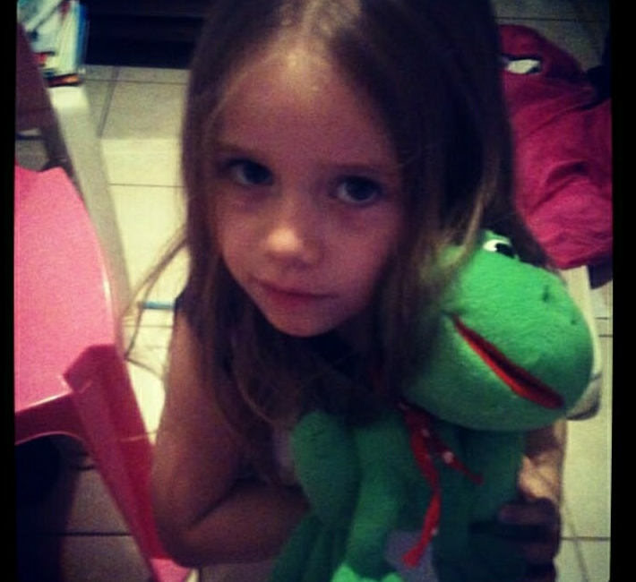
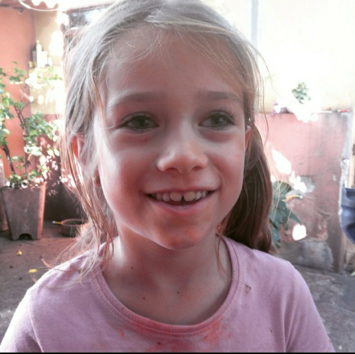
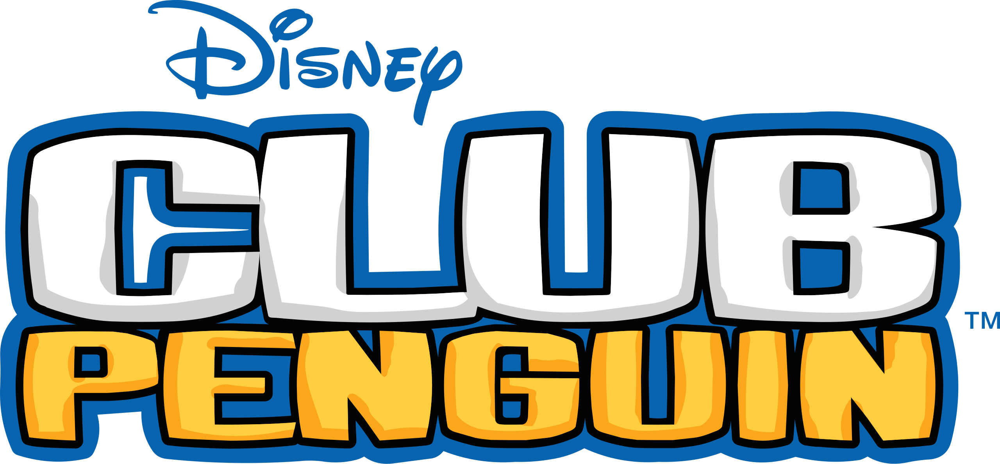
Pinguinando
Agradecimentos
Liderança Pedagógica da SPTech
Agradeço a toda liderança pedagógica da SPTech, professores e monitores que me acompanharam nesse processo, me ajudaram a enfrentar meus desafios e adquirir os conhecimentos necessários para a execução do trabalho
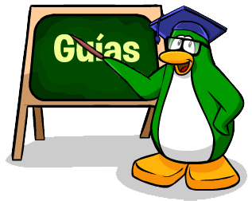Família mais Próxima
Um agradecimento a todas as pessoas que estiveram presentes na minha vida durante minha jornada
-Mauricío Gimenes
-Rita Pires
-Cesar Pires
-André Pires
-Rodolfo
-Lúcio
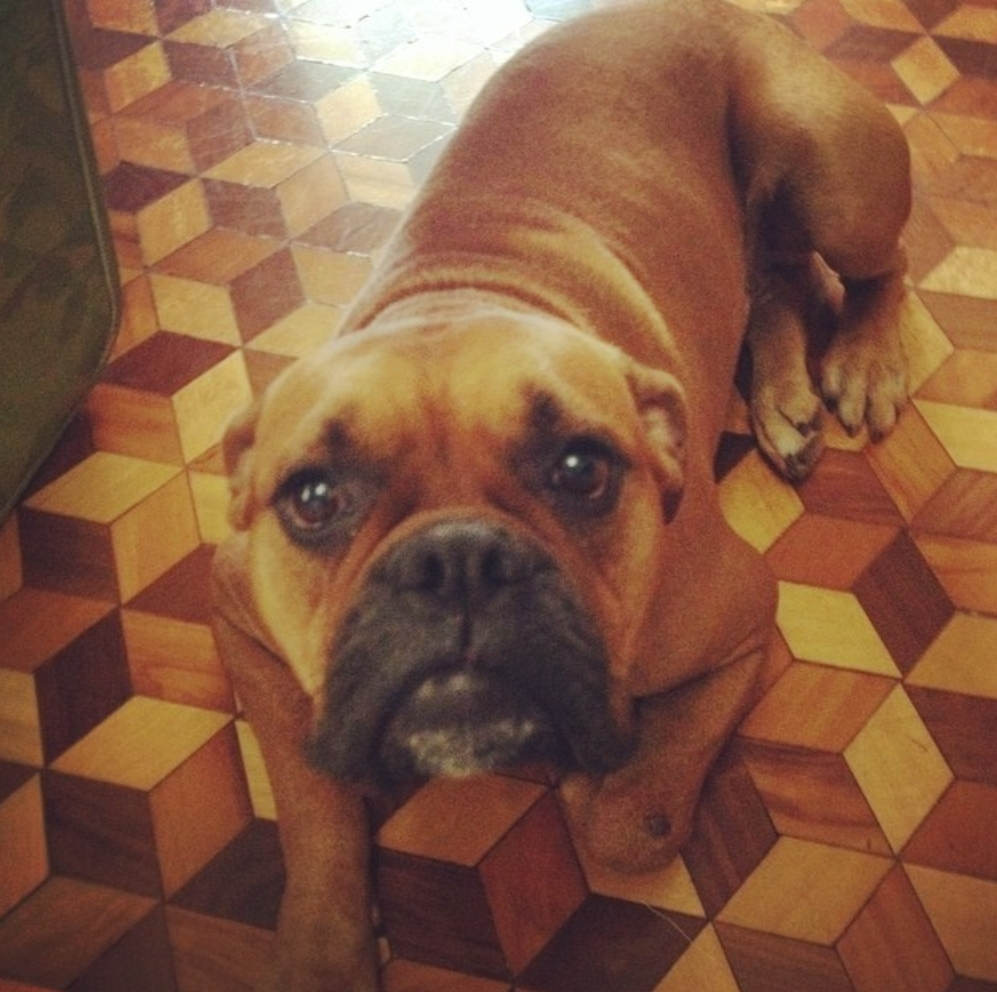
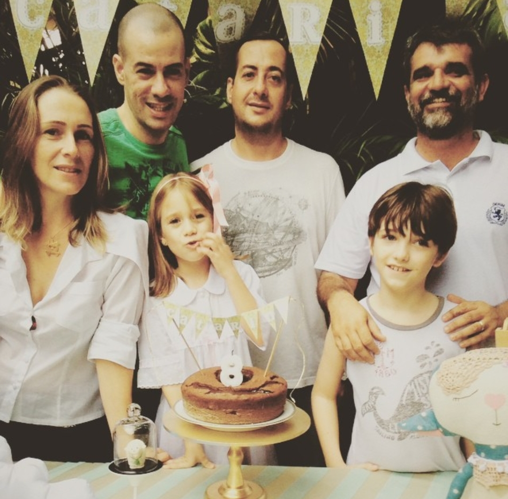
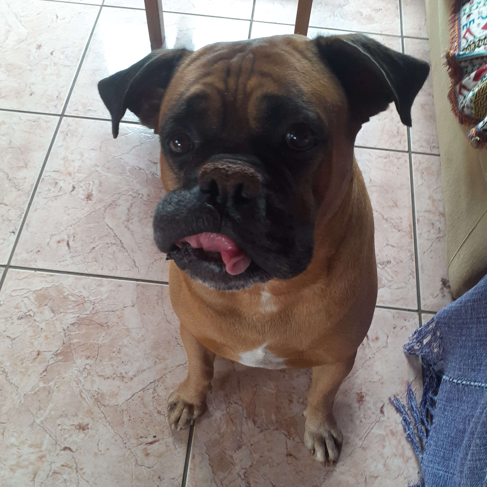
Meu Irmão
Devo um agradecimento especial ao meu irmão, Joaquim G. Pires, o menino mais chato que eu conheço, mas que me ajudou durante todo meu processo, sem ele nada disso teria sido possível (Ele só não pode ficar sabendo), o apoio e suporte dele foram elementos chaves na execução desse projeto, e por isso, ele também merece ser reconhecido aqui
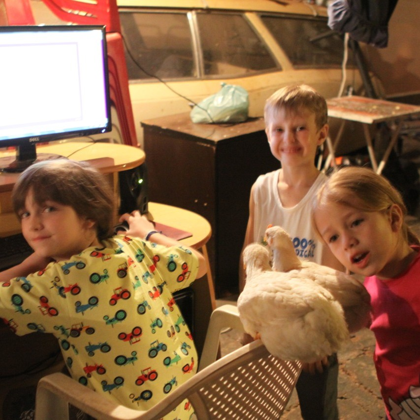
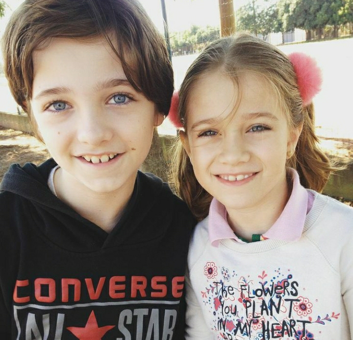
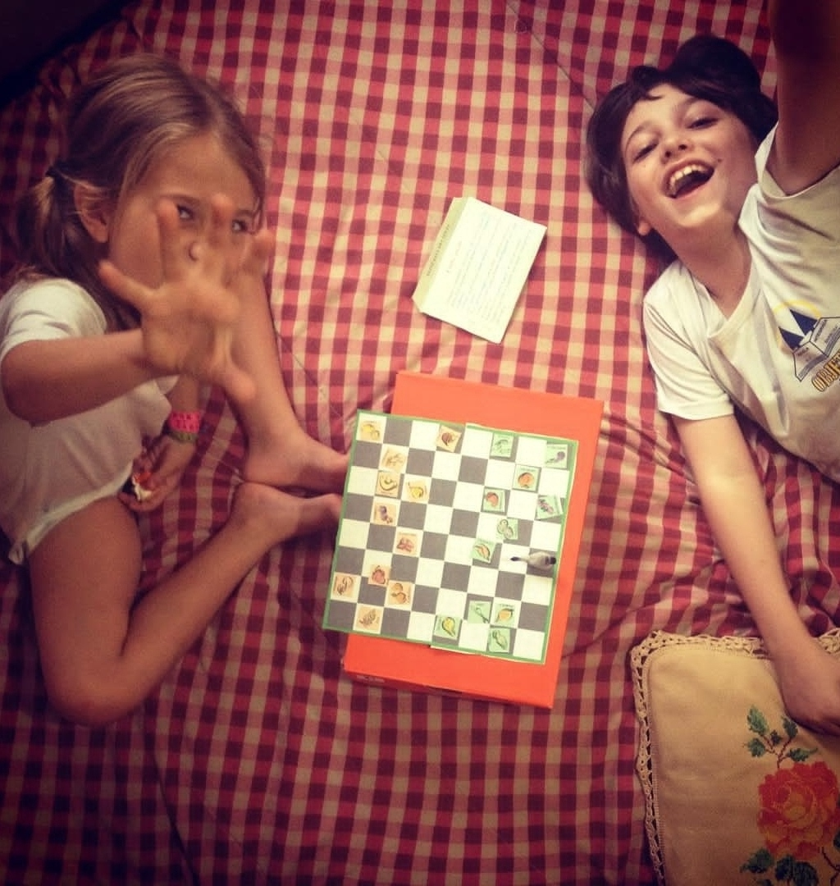
Sobre a Autora
PNINOCA
Catarina G. Pires, ou Pninoca, para os pinguins mais próximos. Este projeto é fruto de todo meu esforço durante o primeiro semestre da faculdade, além de toda ajuda que recebi até aqui. O Club Penguin foi uma parte especial da minha vida, por isso fiz esse projeto com tanto carinho e dedicação. Isso não é sobre a Catarina de 2025, mas sim sobre a "Nina", de 2015, que tentava acordar mais cedo de manhã para poder ligar o computador e jogar um joguinho sobre pinguins
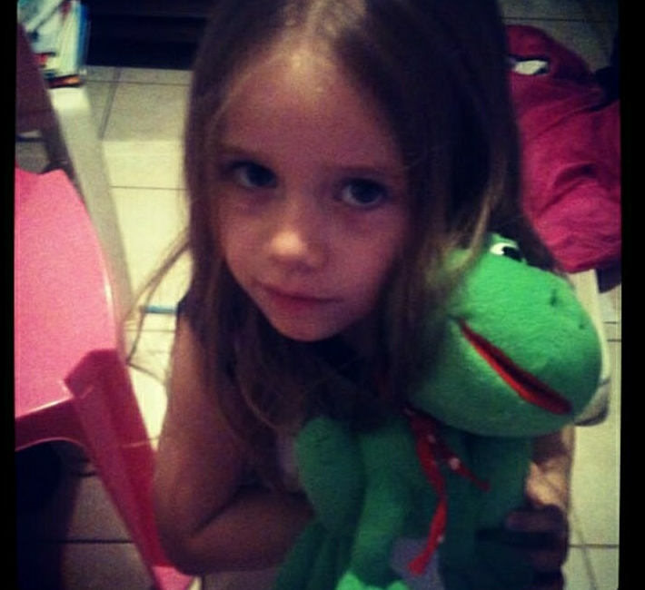
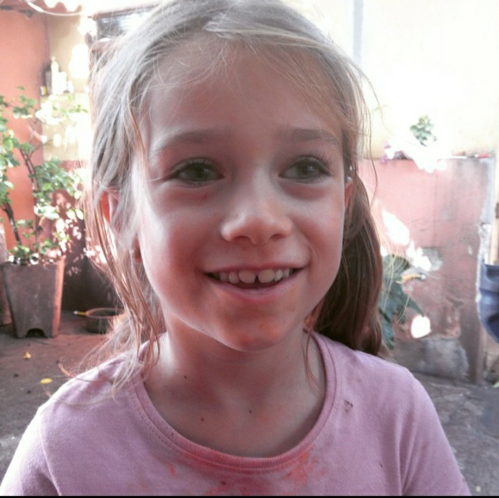
Obrigada!!!
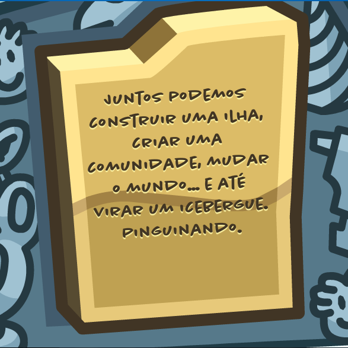